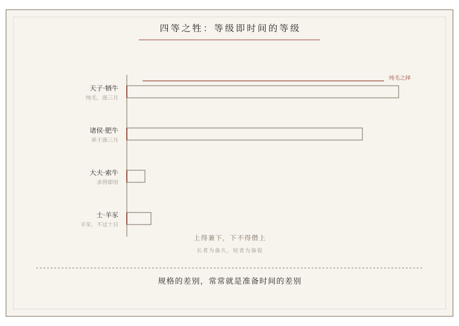

曲礼下 · 二·六十八 · 第 191 课
天子以牺牛，诸侯以肥牛，大夫以索牛，士以羊豕。注「牺，纯毛也。肥，养于涤也。索，求得而用之」。
说什么事：祭牲的四等，与上得兼下之义。
落在哪一层：礼，兼及礼意。论牲之等与祭之备。
为何编在此位：上节论祭之废举，此节论祭之牲。一论其存废，一论其物。
【经】天子以犧牛，諸侯以肥牛，大夫以索牛，士以羊豕。
【注】犧，純毛也。肥，養於滌也。索，求得而用之。
【疏】此一节明祭祀用牲不同。天子以牺牛者，牺，纯毛也，谓毛纯一色。诸侯以肥牛者，肥，养于涤也，谓养于涤宫三月，使之肥腯。大夫以索牛者，索，求得而用之，不必纯色与肥腯也，但求得而已。士以羊豕者，士卑，故用羊豕。上得兼下，下不得僣上。《左传》云「博硕肥腯」，《公羊》云「帝牲必在涤三月，稷牛惟具」。此「大夫士」谓天子之大夫士也；若诸侯之大夫则用少牢，士用特牲。丧祭，大夫亦得用牛，《杂记》云「上大夫之虞也少牢，卒哭与祔皆大牢；下大夫之虞也特牲，卒哭与祔皆少牢」。《楚语》观射父云「大者牛羊必在涤三月，小者犬豕不过十日」。诸侯不得用牺牛，对卿大夫得云牺，对天子称肥。
牺 注「纯毛也」。毛色纯一。
肥 注「养于涤也」。涤，涤宫，养牲之宫。养三月使肥。
索 注「求得而用之」。求得即用，不求纯与肥。
羊豕 士所用。卑，故降。
上得兼下 上位者可用下位之牲，下位者不得用上位之牲。
天子用毛色纯一的牛，诸侯用养在涤宫三个月的肥牛，大夫用临时求得的牛，士用羊和猪。
四等四牲：牺最严，肥次之，索又次之，羊豕最下。礼判牲之高下，看的是它被预备得多细——不是看它多大。
第一层 三等之差在备 牺须纯毛，肥须养涤三月，索只求得。三级之差不在贵贱，在「预备的程度」。礼的等级，往往就是时间的等级。
第二层 上得兼下 疏一句立全篇之纲：「上得兼下，下不得僣上」。此语是礼制中最普遍的一条形式原则：上可以用下的，下不能用上的。整部礼经的等级，几乎都可由这一条推出。
第三层 大夫士有辨 疏特为标出：「此大夫士谓天子之大夫士也」。诸侯之大夫用少牢，士用特牲。同一称谓，在不同国里指不同的等。读礼最易在这里含糊。
第四层 丧祭之变 疏又举《杂记》：上大夫之虞用少牢，卒哭与祔用大牢；下大夫之虞用特牲，卒哭与祔用少牢。祭有常等，丧祭则变。礼之常与变，须分别看。
与今日何干 规格的高低，常常体现为准备得够不够久。一场三天的准备与一场三个月的准备，形式相同，等级不同。
| 左 | 右 |
|---|---|
| 天子以牺牛 | 牺，纯毛也 |
| 诸侯以肥牛 | 肥，养于涤也 |
| 大夫以索牛 | 索，求得而用之 |
| 士以羊豕 | 卑，故降 |
| 上得兼下 | 下不得僣上 |
| 此大夫士 | 谓天子之大夫士 |
画四枚由大而小的牛形侧影（只画背脊、头角与四足的外轮廓，不画内里），自左向右依次略小。第一枚轮廓外圈另加一道与外廓同形的细线（示「纯毛」）；第二枚旁侧画一短栅（示「养于涤」）；第三枚旁画一枚小的问形弧（示「求得」）；第四枚旁画羊与豕各一极小形。四枚下各有一道横线作案。不写文字。赭色只用在第一枚牛外圈那道同形细线。
